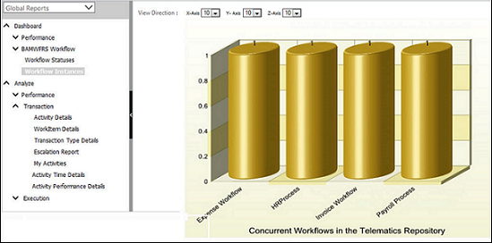

No
The Business Activity Monitoring Dashboard presents an activity monitoring dashboard to the users. It has two default dashboard views - Workflow Statuses and Workflow Instances, which retrieve workflow execution data dynamically and display it in the respective charts.
The dashboard also shows Overdue Analysis reports if overdue analysis configuration has been set for the workflow. For more information, refer to the BAM Configuration and Overdue Analysis Reports.
Workflow Statuses - This view shows a pie-chart representing the status of workflows being executed by the application.
Workflow Instances - This view shows a pie-chart representing the workflow instances being executed in the application.
